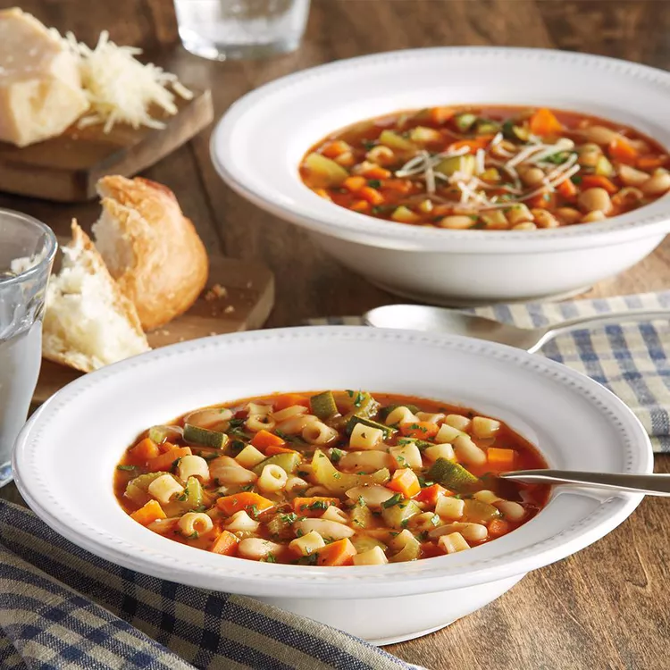

Classic Minestrone Soup

Description
A classic minestrone soup for cold days.
Ingredients
- 1 tablespoon olive oil
- 1 cup diced onion
- 3/4 cup diced carrot
- 3/4 cup diced celery
- 1 1/2 teaspoon minced fresh rosemary
- 1 can tomato sauce
- 1 can cannellini beans, rinsed and drained
- 21/2 cups water
- 2 cups chicken broth
- 1 cup dried zucchini
- 1/2 cup dry pasta
- 1/4 cup chopped fresh Italian parsley
- 1 tablespoon shredded Parmesan cheese, or to taste
Steps
- Heat oil in a large saucepan over medium-high heat. Sauté onion, carrot, celery, garlic, and rosemary until vegetables begin to soften, about 5 minutes.
- Stir in tomato sauce, beans, water, broth, zucchini, pasta, and pepper; bring to a simmer. Cook, uncovered and stirring occasionally, until pasta is tender, 10 minutes. Stir in parsley. Serve topped with Parmesan and additional parsley if desired.